Extra's
Werkcolleges Laurens
Persona's
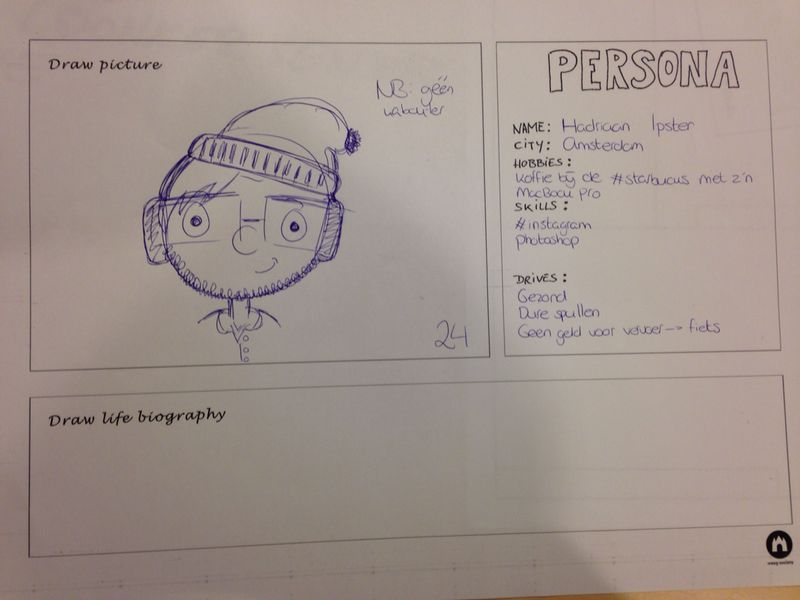 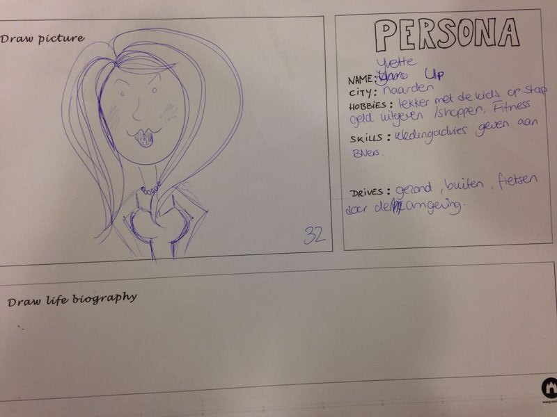Kernvraag / Probleem
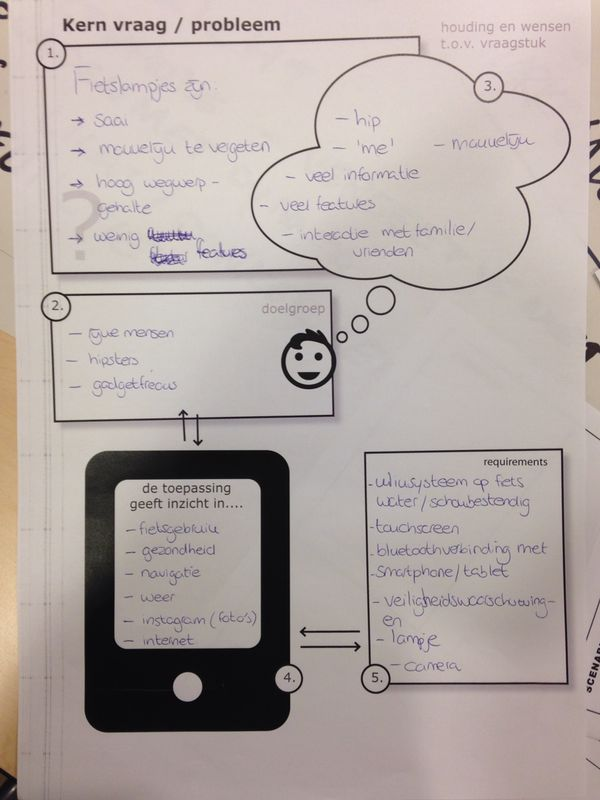Stripje
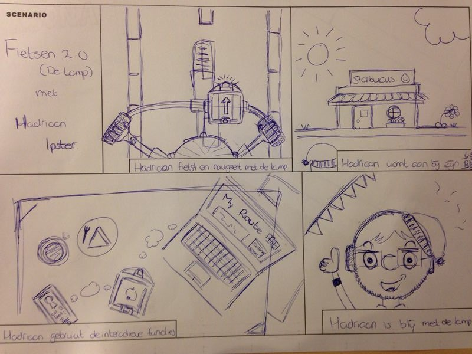Paper prototype versie 1
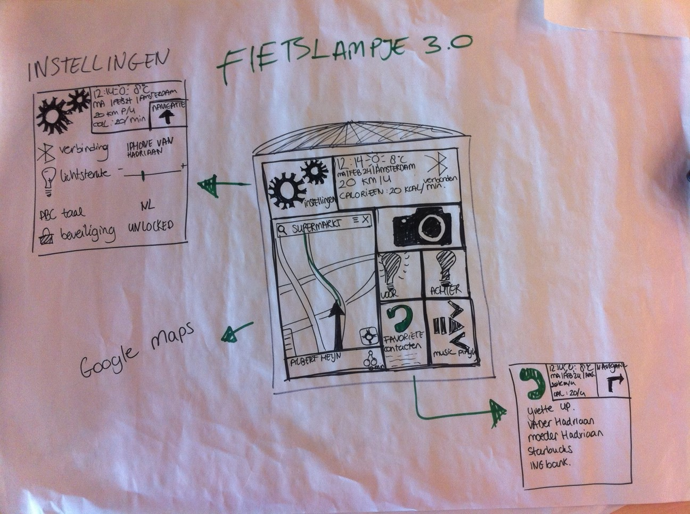Paper prototype versie 2
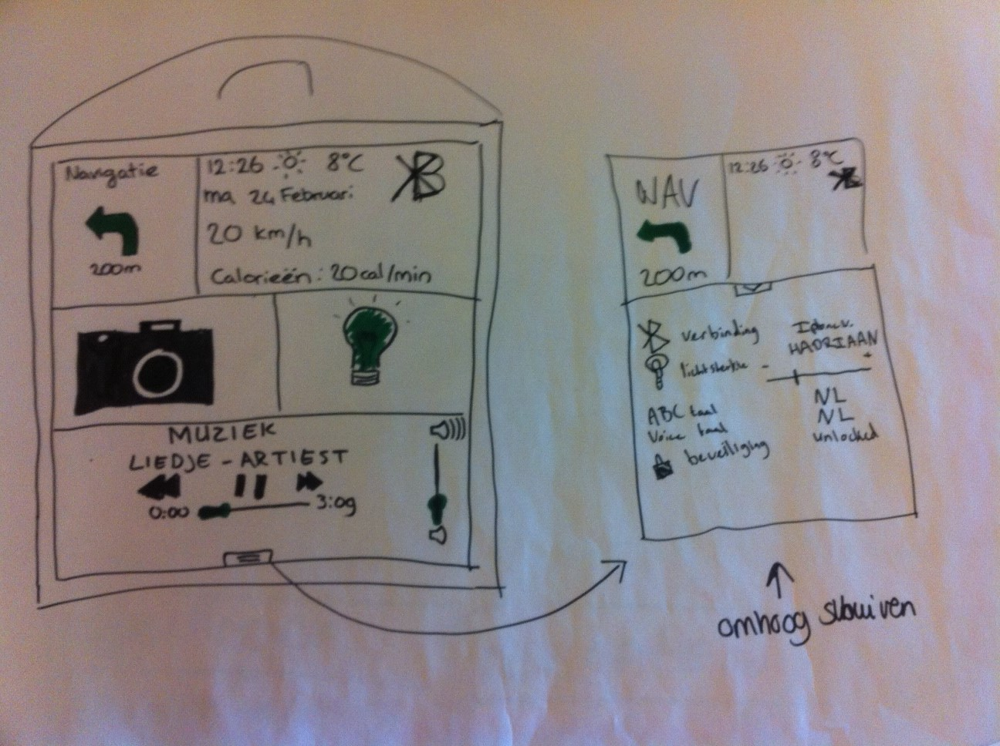Technisch ontwerp
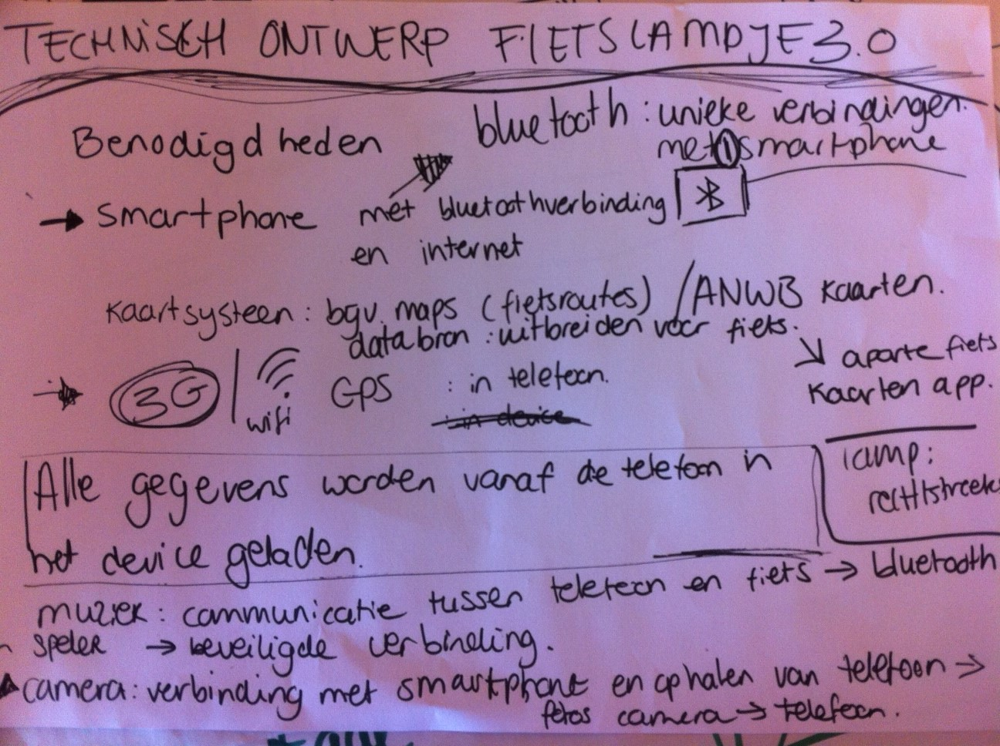
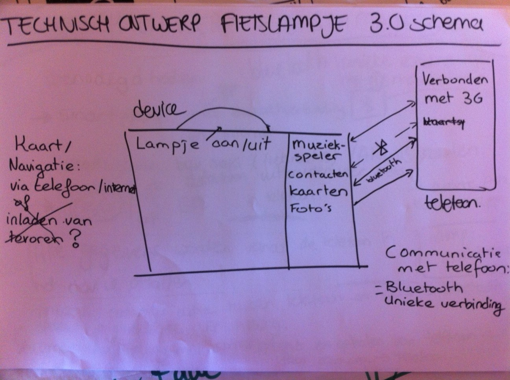
Werkcolleges Peter
Internetbankieren User story strip voor App
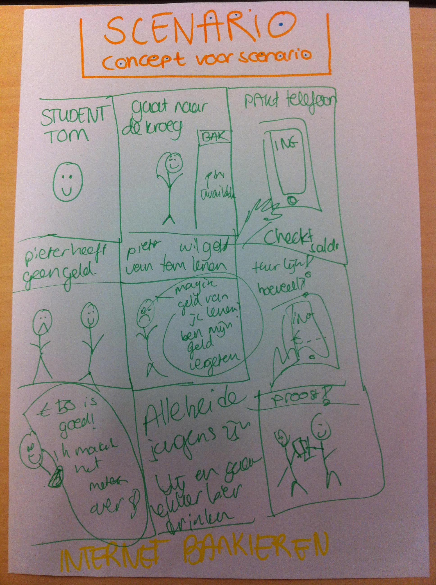Werkcolleges Frank
Geheugen van oost
Wij hebben gekozen voor een soort speurtocht-app, waarbij een kaartje wordt weergeven met verschillende locaties waar zich QR-codes bevinden. Wij hebben gekozen voor de QR-codes om het speurtocht idee in stand te houden. De gebruikers moeten op zoek naar de QR-codes en zo verkennen zij de omgeving waar de codes te vinden zijn. Voor de gebruiker die achteraf nog een keer zijn verhalen wil teruglezen is er de optie om losse verhalen te selecteren (stories). Dit zijn wel alleen de verhalen die al een keer gescand zijn. Wij hebben er voor gekozen om alleen tekst en plaatjes aan te bieden. Hierin is de keus van taal tussen Nederlands en Engels. Het is een bewuste keuze om alleen tekst te gebruiken zodat mensen eventueel stukken kunnen in een verhaal kunnen overslaan. Als er gekozen zou worden voor audio dan kan men niet skippen omdat de gebruiker dan niet weet waar hij of zij in het verhaal terecht komt.
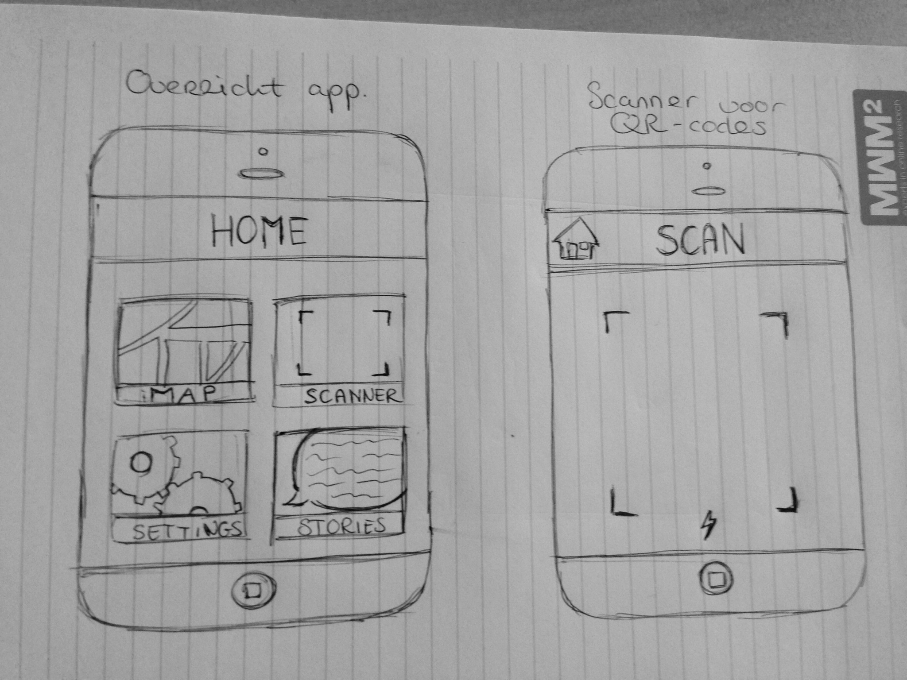 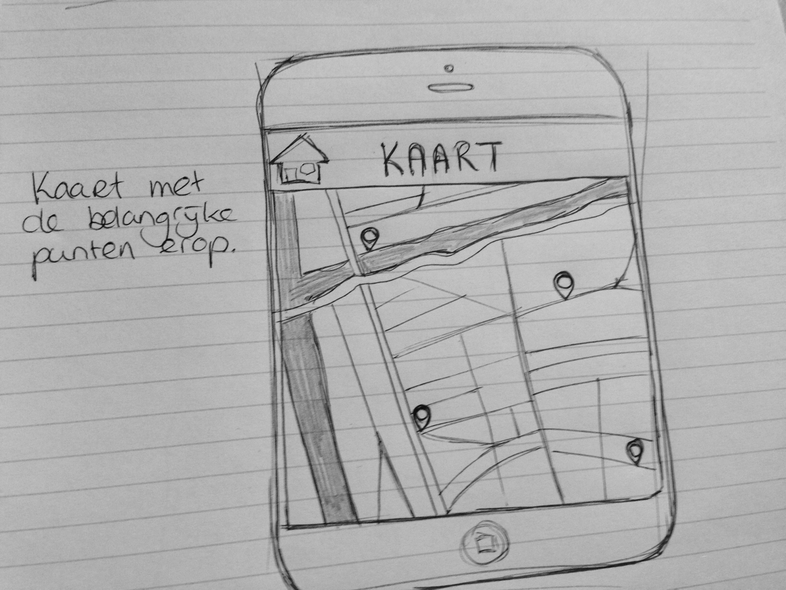